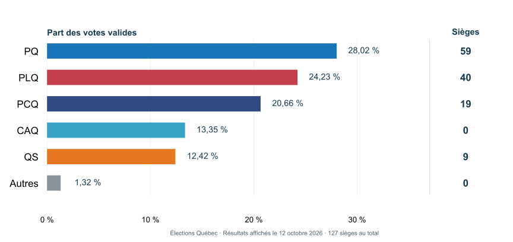
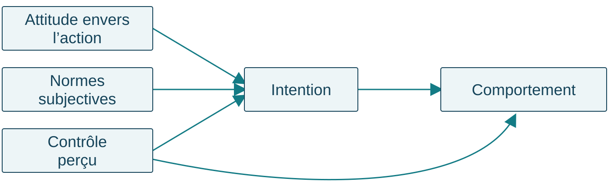
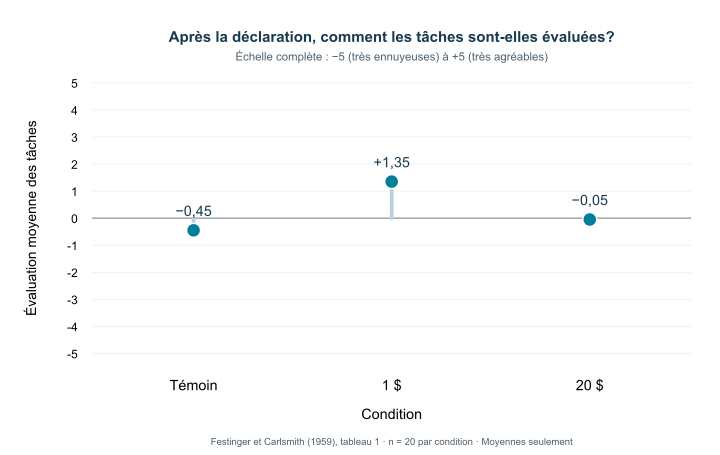
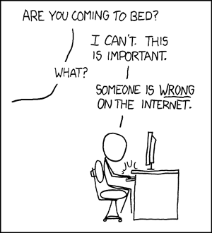

Psychologie sociale
Cours 6 — Les attitudes
UQAR — PSY1703-04
13 octobre 2026
Quiz de lecture 4 — 1,25 %
Chapitre 5 et cours 5 · 8 questions · 10 minutes · Travail individuel
Scannez le code QR, ou ouvrez Wooclap.
Code de l’évènement : EATTXLH
Utilisez votre identifiant UQAR selon les consignes.
Les prochaines évaluations
Quiz 5 · 20 octobre · 1,25 %
Matière évaluée : cours 6 et chapitre 6 — Les attitudes.
8 questions · 10 minutes. Les 8 meilleurs quiz sur 10 comptent pour 10 %.
Examen 2 · 10 novembre · 30 %
Cours 5 à 8 et chapitres 5, 6, 8 et 9. Répartition annoncée : 50 % cours / 50 % manuel.
Note : Puisque la plupart des concepts vus dans le cours sont aussi dans le manuel, cela implique que les 50 % des questions associées aux cours seront fort probablement aussi dans le manuel. Ainsi, il est conseillé de donner un peu plus de poids à l’étude des cours plutôt qu’au manuel.
Connectez-vous à Wooclap
Scannez le code QR, ou ouvrez Wooclap.
Code de l’évènement : STNMOTL
Gardez l’onglet ouvert pour les rondes et les propositions de pause.
Deux estimations, puis les résultats de la classe.
Plan de la séance
- Qu’est-ce qu’une attitude?
- Comment mesure-t-on les attitudes?
- À quoi les attitudes servent-elles?
- La formation des attitudes
- Les attitudes et les comportements
- Le changement d’attitude
Une publicité avec Lise Dion
Faire aimer un produit
Pourquoi une publicité pour du pain choisit-elle de nous faire rire?
Quelle impression cherche-t-elle à donner du produit ou de la marque?
Nous reviendrons à cette scène pour comprendre comment un message peut influencer une attitude.
Qu’est-ce qu’une attitude?
Une attitude est une évaluation favorable ou défavorable à l’égard d’un objet.
On peut avoir une attitude envers une personne, une idée, un produit ou une activité.
« J’aime ce politicien. »
« Je suis contre cette proposition. »
Les attitudes en politique
PQ
Paul St-Pierre Plamondon
PLQ
Charles Milliard
PCQ
Éric Duhaime
CAQ
Christine Fréchette
QS
Ruba Ghazal
Peut-on apprécier une personne, aimer certaines de ses idées et refuser de voter pour elle?
.jpg){kind=link}
.jpg){kind=link}
.jpg){kind=link}
.jpg){kind=link}

Le Québec a voté le 5 octobre 2026

Aimer un parti, vouloir voter pour lui et voter pour lui : trois choses différentes.
Source : Élections Québec, consultés le 12 octobre 2026. Figure refaite dans R.
Progressiste ou conservateur : sur quel enjeu?
Une attitude porte sur un objet précis, pas seulement sur une étiquette politique.
| Enjeu | Proposition à évaluer |
|---|---|
| Ressources naturelles | Autoriser un nouveau projet d’exploitation minière |
| Environnement | Protéger un écosystème menacé |
| Transport | Investir davantage dans le transport en commun plutôt que dans de nouvelles routes |
| Impôts | Augmenter les impôts pour financer davantage de services publics |
Une personne peut-elle être favorable à certaines propositions et défavorable à d’autres?
Attitude, croyance et comportement
Exemples fictifs à propos d’un politicien
| Phrase | Ce qu’elle indique |
|---|---|
| « J’aime ce politicien. » | Attitude favorable |
| « Je crois qu’il tiendra ses promesses. » | Croyance |
| « J’ai voté pour lui. » | Comportement |
On peut voter pour une personne sans l’apprécier, par exemple pour éviter l’élection d’une autre.
Les composantes d’une attitude
Modèle tripartite classique
| Composante | Définition | Exemple fictif |
|---|---|---|
| Cognitive | Croyances à propos de l’objet | « Je crois que ce parti défend mes priorités. » |
| Affective | Émotions et sentiments associés à l’objet | « Son discours m’enthousiasme. » |
| Conative | Tendance ou préparation à agir | « J’envisage de voter pour ce parti. » |
Ces composantes peuvent aller dans le même sens ou se contredire.
Source : Vallerand et Paquette (2021), chapitre 6, p. 180–182. Exemples politiques fictifs.
Ambivalence ou neutralité?
Ambivalence : présence simultanée d’évaluations positives et négatives envers le même objet.
Proposition fictive : augmenter les impôts pour financer davantage de services publics.
| Réaction | Évaluation |
|---|---|
| « De meilleurs services me plaisent, mais la hausse des impôts me déplait. » | Positive et négative |
| « Cette proposition m’est indifférente. » | Ni favorable ni défavorable |
Un point médian sur une seule échelle peut masquer cette différence.
Le différenciateur sémantique
On demande d’évaluer le même objet entre deux adjectifs opposés.
Objet : une proposition de gratuité scolaire
Choisissez une réponse sur chaque ligne.
La formulation des questions détermine ce que l’on mesure.
La désirabilité sociale
La désirabilité sociale est la tendance à donner une réponse qui présente une image favorable de soi aux autres.
Une personne peut adapter ce qu’elle dit pour faire bonne impression.
Lorsqu’on pose une question, à qui la personne pense-t-elle devoir plaire?
Ce qu’il mange… et ce qu’il dit
Que voit-on dans la scène? Que raconte-t-il au téléphone?
Pourquoi choisit-il cette réponse?
Il cherche à faire bonne impression auprès de son interlocuteur.
Un questionnaire d’attitude pourrait-il susciter le même souci de plaire?
Attitudes explicites et implicites
Une attitude explicite est une évaluation que la personne rapporte consciemment.
Une attitude implicite est une évaluation dont l’activation ou l’expression peut échapper au contrôle conscient.
| Mesure | Information recueillie |
|---|---|
| Déclarée | Le jugement que la personne rapporte |
| Indirecte | Un indice de son évaluation dans une tâche |
Comment fonctionne le test d’association implicite?
Le test d’association implicite (TAI) compare la performance quand des catégories et des évaluations partagent une réponse.
On compare les temps de réponse entre deux jumelages, en tenant compte des erreurs.
Reprenons la démonstration du cours 4, avec Ruba Ghazal et Éric Duhaime.
Principe : Greenwald, McGhee et Schwartz (1998).
TAI : à vos mains!
Levez une main aussi rapidement que possible.
- Catégorie de gauche → main gauche.
- Catégorie de droite → main droite.
- Si vous vous trompez, corrigez simplement votre réponse.
Nous allons classer des personnes, puis des mots, puis les deux ensemble.
TAI : entrainement — les personnes
Classez le nom ou le portrait de la personne.
TAI : essai 1
TAI : essai 2
TAI : entrainement — les mots
Classez le sens du mot.
TAI : essai 3
TAI : essai 4
TAI : premier jumelage
Même règle : une personne ou un mot, une seule main.
TAI : essai 5
TAI : essai 6
TAI : essai 7
TAI : essai 8
TAI : jumelage inversé
Les mots changent de côté. Quatre nouveaux essais.
TAI : essai 9
TAI : essai 10
TAI : essai 11
TAI : essai 12
TAI : que faudrait-il comparer?
Quelle règle a changé entre les deux jumelages?
Si l’on voulait mesurer la facilité du classement, quelles informations faudrait-il enregistrer?
Les temps de réponse, en tenant compte des erreurs, puis comparer les deux jumelages.
À quoi les attitudes servent-elles?
| Fonction | Exemple fictif de soutien à un parti |
|---|---|
| Connaissance : organiser l’information | « Son programme m’aide à comprendre les enjeux. » |
| Adaptation sociale : faciliter l’intégration | « Militer me rapproche de mes amis. » |
| Expression : manifester ses valeurs | « Ce parti exprime mes priorités. » |
| Défense du soi : protéger son image | « Mon choix ne pouvait pas être une erreur. » |
Une même attitude peut remplir plusieurs fonctions.
La formation des attitudes
| Processus | Définition brève | Exemple |
|---|---|---|
| Simple exposition | L’appréciation peut augmenter avec la répétition | Une chanson devient familière et nous plait davantage |
| Évaluation conditionnée | L’évaluation change après l’association avec un élément positif ou négatif | Une marque associée à des scènes amusantes |
| Conditionnement opérant | Les conséquences d’une conduite influencent sa répétition | Une activité gratifiante nous donne envie de recommencer |
La famille, la culture et nos expériences contribuent à la formation des attitudes.
L’apprentissage social et les croyances
L’apprentissage social consiste à apprendre en observant les autres.
Exemple fictif : dans une famille, on admire un parti et on critique un autre. Un jeune peut reprendre ces évaluations.
Le modèle croyance-évaluation relie l’attitude aux conséquences que l’on croit associées à l’objet et à l’importance qu’on leur accorde.
« Je crois que cette proposition réduirait mes dépenses, et c’est important pour moi. »
Les attitudes prédisent-elles les comportements?
« J’aime ce parti » est une attitude envers un parti.
Pour comprendre un vote précis, rapprochons :
| Dimension | Exemple |
|---|---|
| Action | Voter |
| Cible | Pour une candidature de ce parti |
| Situation | Aux élections québécoises |
| Temps | Le 5 octobre 2026 |
Quelle était son attitude envers le fait de voter pour cette candidature ce jour-là?
L’intention et le comportement
Intention comportementale : volonté ou projet d’accomplir une action déterminée.
Avant le scrutin : « Je compte aller voter le 5 octobre. »
Comportement : action effectivement réalisée.
Après le scrutin : « Le 5 octobre, je suis allé voter. »
Une intention ne garantit pas la réalisation de l’action.
Peut-on voter pour quelqu’un sans le préférer?

préférée
stratégique
Deux choix possibles :
« Voter pour ma candidature préférée. »
« Voter stratégiquement pour bloquer une autre candidature. »
Quel lien avec la préférence, l’intention et le vote?
Jake Clark, Daily Struggle / Two Buttons · Modèle Imgflip · légendes françaises ajoutées.
Voter pour son deuxième choix
Cas fictif : Noa préfère la candidature A.
Avant l’élection, Noa prévoit voter pour B afin d’éviter la victoire de C.
Le jour du scrutin, Noa vote pour B.
Distinguez sa préférence, son intention et son comportement.
Préférence : A. Intention : voter pour B. Comportement : vote pour B.
Les normes subjectives et le contrôle perçu
Normes subjectives : pression sociale perçue de personnes ou de groupes importants concernant l’action.
« Ma famille s’attend à ce que je vote pour le même parti qu’elle. »
Contrôle comportemental perçu : perception de sa capacité et des possibilités de réaliser cette action.
« Je pense pouvoir me rendre au bureau de vote à temps. »
La théorie du comportement planifié

Schéma simplifié : attitude, normes subjectives et contrôle perçu contribuent à l’intention; intention et contrôle perçu sont liés au comportement.
L’intention et les possibilités de réaliser l’action comptent aussi.
Une application de mes recherches
Nos identités sociales peuvent influencer les trois éléments de base du modèle : attitudes, normes subjectives et contrôle perçu (illai, Globig, Rathje, Sternisko, Thériault, & Van Bavel, 2026).

Notre revue applique cette idée aux comportements de santé publique.
Pillai et al. (2026), avec Rémi Thériault. An Identity-Based Approach to Polarization and Public Health. Article.
L’identité sociale et les attitudes politiques
Cas fictif : une personne s’identifie fortement à un parti.
Elle accorde beaucoup d’importance aux recommandations des membres qu’elle respecte.
Elle peut aussi juger une proposition plus favorablement lorsqu’elle la croit soutenue par son groupe.
Comment son appartenance peut-elle influencer ce qu’elle croit et ce qui compte pour elle?
Exemple résolu : le contenant réutilisable de Sam
Sam prévoit apporter son contenant réutilisable à la cafétéria demain.
| Ce qu’il dit | Concept |
|---|---|
| « Apporter mon contenant réutilisable serait une bonne chose. » | Attitude favorable |
| « Mes amis m’encouragent à l’apporter. » | Normes subjectives |
| « Je peux le mettre dans mon sac avant de partir. » | Contrôle perçu |
| « Je compte l’apporter demain. » | Intention |
S’il l’apporte demain, nous observerons son comportement.
Ronde 1 : définition, mesure et formation
Scannez le code QR, ou ouvrez Wooclap.
Code de l’évènement : STNMOTL
Gardez l’onglet ouvert pour les rondes et les propositions de pause.
Trois questions, puis une explication des réponses.
1. Attitude, croyance ou comportement?
« Je trouve cette proposition politique souhaitable. »
A. Une attitude favorable
B. Une croyance sur ses conséquences
C. Un comportement réalisé
2. Que mesure cette question?
« Je suis favorable à la gratuité scolaire. »
La personne indique son degré d’accord avec cet énoncé.
A. Son intention de signer une pétition demain
B. Son attitude déclarée envers cette proposition
C. Le fait d’avoir signé une pétition
3. Comment cette attitude s’est-elle formée?
Une personne commence à aimer une chanson après l’avoir entendue plusieurs fois, sans récompense particulière.
A. Par simple exposition
B. Par conditionnement opérant
C. Par dissonance cognitive
Pause — 10 minutes
10 minutes
Proposez une chanson ou une photo de votre animal pour la pause.
Scannez le code QR, ou ouvrez Wooclap.
Code de l’évènement : STNMOTL
Gardez l’onglet ouvert pour les rondes et les propositions de pause.
Atelier : inventez le vote d’Andréa
Andréa est un personnage fictif. Vous choisissez son histoire.
Votre équipe choisit sa candidature préférée, celle pour laquelle elle prévoit voter et celle pour laquelle elle vote finalement.
Ces trois choix peuvent être identiques ou différents.
Inventez les raisons de ses choix, sans raconter votre propre vote.
Votre équipe écrit cinq répliques
| À préciser | Réplique d’Andréa |
|---|---|
| Attitude envers le vote envisagé | « Voter pour cette candidature serait… » |
| Normes subjectives | « Les personnes importantes pour moi attendent que… » |
| Contrôle perçu | « Je pense pouvoir voter parce que… » |
| Intention | « Je prévois voter pour… » |
| Comportement | « Finalement, j’ai voté pour… » |
Ajoutez sa préférence et expliquez un éventuel vote stratégique.
Présentez votre histoire et défendez votre explication
En une minute : racontez le choix d’Andréa et expliquez deux liens avec le modèle du comportement planifié.
Les autres équipes posent une question : quel détail du récit soutient votre explication?
Conservez votre histoire : nous reviendrons à ce qu’Andréa dit après son vote.
Le changement d’attitude : la dissonance cognitive
La dissonance cognitive est un état d’inconfort associé à des cognitions incompatibles.
Une conduite peut entrer en conflit avec une attitude ou une conviction.
La personne est alors motivée à réduire cet inconfort.
Un écart observé ne suffit pas à établir cet état.
La dissonance après un achat
Alex : « J’ai dépensé 800 $ pour une console alors que je voulais économiser pour déménager. Je m’en veux. »

« Je vais économiser sur autre chose. »
Quel conflit ressent-il? Comment essaie-t-il de se rassurer?
KC Green, Gunshow — This Is Fine · Modèle Imgflip · adaptation française et contexte fictif ajoutés.
Comment réduire la dissonance?
| Possibilité | Ce qu’Alex pourrait faire ou penser |
|---|---|
| Changer son comportement | Retourner la console |
| Changer son évaluation | « Finalement, cet achat en valait la peine. » |
| Ajouter une justification | « Je vais économiser sur d’autres loisirs. » |
| Réduire l’importance du conflit | « Mon déménagement est encore loin. » |
Alex cherche à se sentir plus cohérent avec sa décision.
Pourquoi agir peut-il influencer nos attitudes?
| Explication | Ce que la personne cherche à faire |
|---|---|
| Présentation de soi / gestion de l’impression | Donner une image cohérente de soi aux autres |
| Dissonance cognitive | Réduire un malaise lié à des cognitions incompatibles |
| Perception de soi (autoperception) | Comprendre son attitude en observant sa conduite et son contexte |
Faire bonne impression peut changer ce qu’on déclare, sans changer ce qu’on pense.
Au laboratoire : un même geste, trois explications
Cas fictifs : trois personnes donnent du temps à un laboratoire de recherche.
Présentation de soi
Image auprès des autres
Dissonance cognitive
Conflit et malaise
Perception de soi
Observation de sa conduite
Une étude — Dire qu’une tâche est agréable
Pendant une heure, des étudiants répètent des gestes monotones : déplacer des bobines, puis tourner des chevilles.
On demande ensuite à certains de présenter cette tâche comme agréable à une autre personne :
- Témoin : pas de demande de la présenter comme agréable.
- 1 $ : la présenter comme agréable contre une faible rémunération.
- 20 $ : la présenter comme agréable contre une rémunération plus forte.
On mesure ensuite l’évaluation personnelle de la tâche.
Votre prédiction
Quel groupe évaluera la tâche le plus favorablement?
A. Le groupe témoin
B. Le groupe 1 $
C. Le groupe 20 $
Scannez le code QR, ou ouvrez Wooclap.
Code de l’évènement : STNMOTL
Gardez l’onglet ouvert pour les rondes et les propositions de pause.
Résultat — L’évaluation de la tâche

Source : Festinger et Carlsmith (1959), tableau 1. Moyennes publiées; 20 personnes analysées par groupe.
Pourquoi le groupe 1 $ apprécie-t-il davantage la tâche?
À deux : pourquoi le groupe payé 1 $ a-t-il donné l’évaluation la plus favorable?
Que pourrait se dire une personne payée 1 $? Et une personne payée 20 $?
20 $ : « J’ai dit cela pour l’argent. »
La rémunération fournit une justification externe, une raison liée à la situation.
1 $ : « Cette petite somme explique moins bien ce que j’ai dit. Peut-être que la tâche était intéressante… »
Réévaluer la tâche peut réduire la dissonance.
Retour à Andréa : que dit-elle après son vote?
Reprenez votre personnage. Choisissez une des trois explications.
Écrivez une bulle qui montre :
- l’image qu’elle veut donner aux autres;
- ou son malaise et une façon de le réduire;
- ou ce qu’elle infère de son vote, alors que sa préférence était peu claire.
Présentez votre bulle et justifiez votre choix par un détail précis.
Pause — 10 minutes
10 minutes
Proposez une chanson ou une photo de votre animal pour la pause.
Scannez le code QR, ou ouvrez Wooclap.
Code de l’évènement : STNMOTL
Gardez l’onglet ouvert pour les rondes et les propositions de pause.
Convaincre quelqu’un sur Internet

« Tu viens te coucher? » — « Je ne peux pas. Quelqu’un a tort sur Internet. »
Vouloir convaincre suffit-il pour convaincre?
Randall Munroe, xkcd nº 386 — Duty Calls · CC BY-NC 2.5. Image originale; résumé français du dialogue.
La persuasion
La persuasion est un changement d’attitude produit par une communication.
Une campagne, une discussion ou une publicité peut chercher à persuader.
Recevoir un message ne signifie pas nécessairement changer d’attitude.
Que fait la personne avec le message reçu?
La persuasion : voies centrale et périphérique
Élaboration cognitive : réflexion sur le contenu pertinent d’un message.
Voie centrale
Examen attentif des arguments et des pensées qu’ils suscitent.
Voie périphérique
Appui sur des indices qui demandent moins d’examen du fond.
La motivation et les ressources disponibles orientent le traitement.
Une étude — Un examen de plus pour obtenir son diplôme?
Des étudiants entendent un message proposant un examen obligatoire avant l’obtention du diplôme.
Pour un groupe, la mesure commencerait l’année suivante; pour l’autre, dans dix ans.
Le même sujet vous toucherait-il autant dans les deux situations?
Ce que les chercheurs font varier
| Élément | Deux versions |
|---|---|
| Conséquences personnelles | L’année suivante / Dans dix ans |
| Arguments | Solides / Faibles |
| Expertise annoncée | Commission spécialisée / Classe du secondaire |
On recueille ensuite l’attitude envers l’examen proposé.
Prédiction : qu’est-ce qui pèsera le plus?
Si l’examen peut vous toucher bientôt, qu’est-ce qui devrait surtout influencer votre jugement?
Et s’il ne vous touche pas, qu’est-ce qui pourrait peser davantage?
À deux : comparez le rôle des arguments et celui de l’expertise annoncée.
Résultat — Deux influences selon l’enjeu personnel
| Situation | Influence plus forte observée |
|---|---|
| Examen l’année suivante | Qualité des arguments |
| Examen dans dix ans | Expertise annoncée de la source |
Comment la motivation aide-t-elle à comprendre ces résultats?
Petty, Cacioppo et Goldman (1981), p. 851. Résumé qualitatif des résultats.
Une proposition politique : deux façons de la juger
Cas fictif : un message propose la gratuité scolaire.
Alex compare le cout, le financement et les conséquences pour les études.
Noa soutient la proposition surtout parce que son artiste préféré l’appuie.
En deux phrases : nommez la voie suivie par chaque personne et expliquez votre choix.
Alex suit la voie centrale, car il examine les arguments et les conséquences de la proposition.
Noa suit la voie périphérique, car il s’appuie surtout sur l’approbation d’une personne qu’il admire.
Ronde 2 — Expliquer le mécanisme
Scannez le code QR, ou ouvrez Wooclap.
Code de l’évènement : STNMOTL
Gardez l’onglet ouvert pour les rondes et les propositions de pause.
Trois cas nouveaux pour retrouver les mécanismes.
4. Réduire la dissonance
Alex regrette un achat qui contredit son projet d’économiser. Pour se sentir mieux, il se convainc que cet achat en valait la peine.
Quelle façon de réduire la dissonance illustre ce cas?
A. Réévaluer son achat plus favorablement.
B. Modifier sa conduite en retournant l’achat.
C. Justifier sa conduite par une récompense reçue.
5. Examiner un message
Noa lit une proposition de pipeline, vérifie ses données et formule deux contre-arguments avant de la rejeter.
A. Voie périphérique, puisqu’il y a rejet
B. Voie centrale, puisqu’il y a examen du fond
C. Aucun traitement, puisque l’attitude ne change pas
6. Après la publicité
Après avoir vu la publicité du pain, Alex compare les ingrédients, la valeur nutritive et le prix du produit avant de se faire une opinion.
Quel traitement du message illustre surtout sa démarche?
A. Voie centrale : il examine les arguments.
B. Voie périphérique : il se fie surtout au prestige de la source.
C. Évaluation conditionnée : la marque est associée à une émotion agréable.
Les prochaines évaluations
Quiz 5 · 20 octobre · 1,25 %
Matière évaluée : cours 6 et chapitre 6 — Les attitudes.
8 questions · 10 minutes. Les 8 meilleurs quiz sur 10 comptent pour 10 %.
Examen 2 · 10 novembre · 30 %
Cours 5 à 8 et chapitres 5, 6, 8 et 9. Répartition annoncée : 50 % cours / 50 % manuel.
Note : Puisque la plupart des concepts vus dans le cours sont aussi dans le manuel, cela implique que les 50 % des questions associées aux cours seront fort probablement aussi dans le manuel. Ainsi, il est conseillé de donner un peu plus de poids à l’étude des cours plutôt qu’au manuel.
Pour le prochain cours
20 octobre · Cours 7 — Les relations interpersonnelles
Lire le chapitre 8 du manuel.
Revenir avec une question sur une notion ou un exemple du chapitre.
PSY1703 — Psychologie sociale · Automne 2026
Comment mesure-t-on les attitudes?
Mesure explicite : demander à la personne de rapporter son évaluation.
Un item de type Likert mesure son degré d’accord avec un énoncé.
« Je suis favorable à la gratuité scolaire. »
Quelle différence avec « Je compte signer une pétition pour la gratuité scolaire demain »?